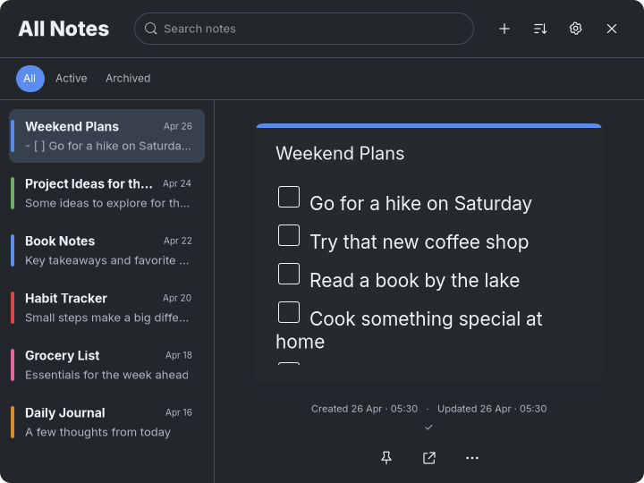
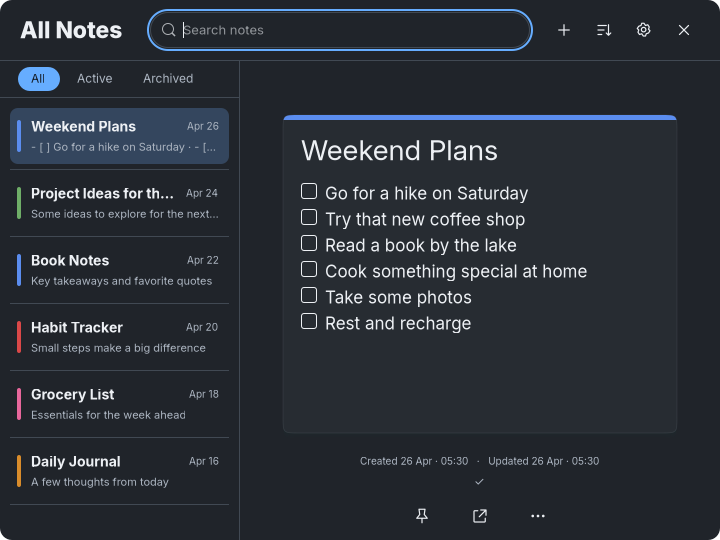
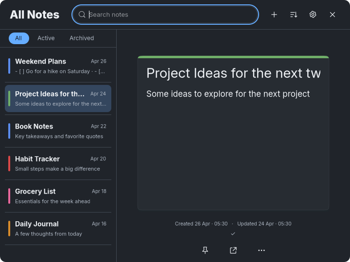
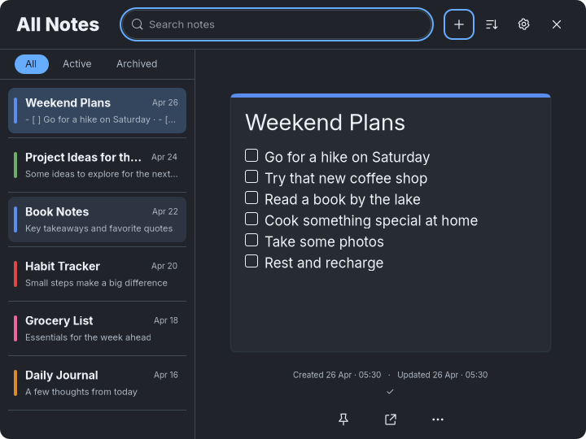
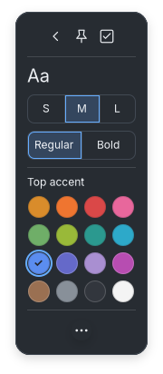
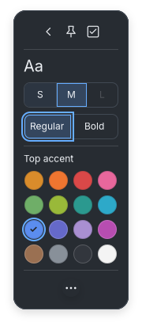
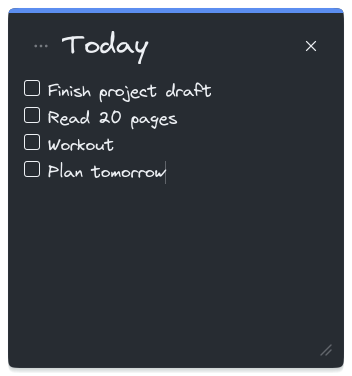
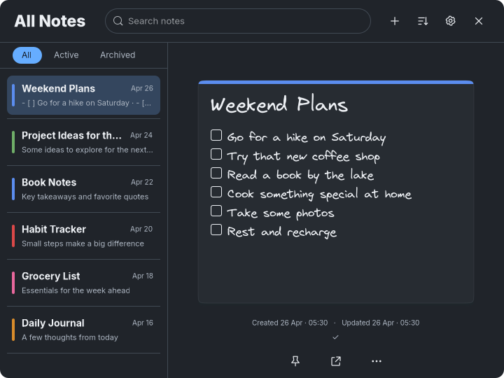

Latest requested fixes: corners, spacing, Appearance row and working canvas patterns. Earlier review captures remain below.
Latest requested correction: one animated Appearance panel, removed back arrow and dimmed filters. Earlier captures remain below.
Minimal Dark visual review
Latest correction: taller filter band and consistent first-row spacing, verified in Dark first and applied to all themes. This page preserves the preceding theme review.
Playful and Minimal Light are approved. Minimal Dark is under review. Stop here for visual review. No commit or push.
Actual GTK renders with disposable notes. Click any image for its original pixels. Changes, verification and remaining differences.
All Notes, before and after

Before this Dark pass, 720×540, same Blue tag and six itemsCurrent default Inter, 720×540, all six items visibleDark keeps the approved Minimal layout proportions, with its own charcoal chrome, off-white text and blue focus rings. Straight row dividers sit outside rounded selected fills.
Selection, hover and long titles

Selected row hovered, highlight and divider remain separate
Long selected title truncates beside its saved date
Selected Weekend Plans, hovered Book Notes and focused New noteHover and focus are actual GTK state previews set programmatically. Search has focus in these fixtures. Pointer and keyboard interaction were not repeated.
Default and minimum individual notes
Long content wraps and scrolls. Tools open without increasing either note dimension.
Open tools and dark control states

Individual tools, native GTK popover, 180×412
S hovered, M selected, L disabled and Regular focusedSelection uses #34465e with a blue outline, hover #2c3541, focus #66adff and disabled controls 40 percent opacity. The existing sixteen-color palette remains.
Dark individual reference, matching content
 Original Minimal Dark Today reference
Original Minimal Dark Today reference
Actual Today content, global Virgil choice, 352×376Main layout reference
 Original Minimal Light main reference guides Dark layout
Original Minimal Light main reference guides Dark layout
Actual Dark Weekend Plans, global Virgil choice, 720×540No separate Dark main reference was supplied. Sidebar bars follow the agreed Minimal design.
Provisional Dark typography
| Text | Small | Medium | Large |
|---|
| Title | 25px | 28px | 31px |
| Body | 14px | 17px | 20px |
Inter by default. Virgil and JetBrains Mono are global Settings choices. Regular 400, Bold 700. Chrome uses Inter with 14px sidebar titles, 11px snippets, 10px dates and a 23px/800 All Notes heading.
Remaining differences
Inter and supplied Virgil differ from the mock handwriting. Compact text leaves more space in Today. The retained Blue palette shade differs from the brighter reference strip, and the shadow is restrained at actual note size. No automatic underline or decorative note-face pin was added. Long titles scroll inside their entry. Tools adapt the tall mock to existing compact controls.
Paper and approved Playful/Light regression captures
Minimal Light is pixel-identical in all three matched captures. Paper and Playful differ only in thin blinking caret pixels, at the Paper search field and Playful note body. Shared font/drawing/spacing edits affect Dark branches only; CSS is scoped to Dark.
Paper
Before note · After note · Before tools · After tools
Approved Playful
Before note · After note · Before tools · After tools
Approved Minimal Light
Before note · After note · Before tools · After tools
Verification
Formatting, 22 non-display tests, strict Clippy, release build, diff checks and the existing GTK shared-editor regression passed. Disposable GTK assertions verified shared typography, S/M/L, weight, sixteen colors with persistence, three global fonts, selected content, exact dimensions and tools preserving note size. No GTK warnings or errors occurred in the completed run.
Native pointer resizing, Escape, timers, edge anchoring and milestone performance checks were not repeated. No desktop configuration changed. Changes remain uncommitted. Stop for Minimal Dark review.